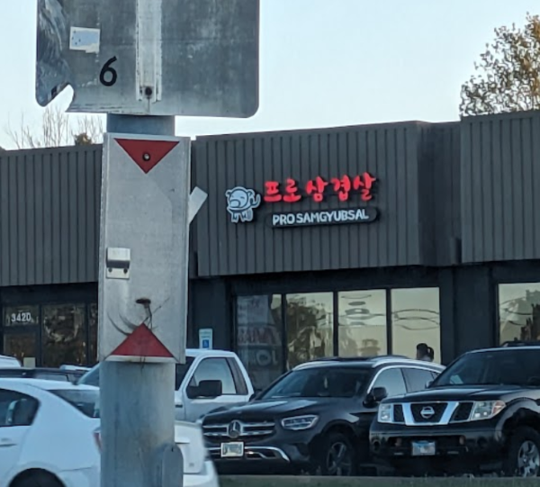

My name is Juan Andres Simone Perez, I am currently pursuing my masters degree in Computer Science with a specialization in Software Engineering. I am also currently working part-time 30hrs a week as a Data Engineer at Mondelez International where I am exposed to new challenges every single day.
Currently I enjoy creating new things on frameworks I find online, such as react, django and hosting these digital applications on a cloud environment. I am mainly knowledgeable on GCP and use it for some of my personal projects.
I also enjoy reading a lot in my free time, alongside playing games and cooking new things whenever I have the time.
I also really enjoy One Piece, here is my favorite character from the series
Hopefully I will be graduting next semester, Fall 2024 with my Masters and Undegraduate in Computer Science.
I recently moved, 11th of February, to an apartment in Chicago. I am very happy with this new place as I am closer to University and makes commuting way quicker.
Recently I celebrated my 5th aniversary of being together with my girlfriend, we went to an amazing Korean restaurant which had amazing food and service. The restaurant is located in Glenview, however it is 100% worth the drive to go to this place.
I have been trying to listen to new music. Recently I have come to enjoy this artist that goes by the name of "LiSA", she does covers and original songs. Here is a quick cover that she did that is one of my favorites so far: